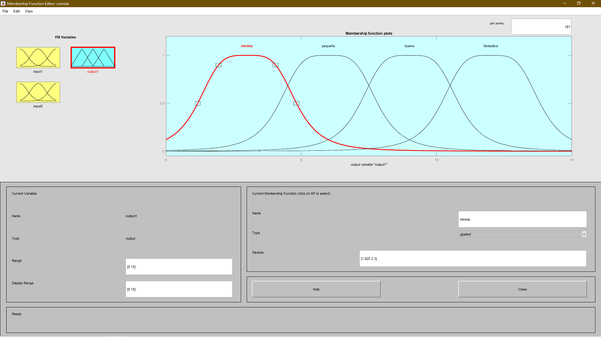

Practica 6
Equipo los difusos
Contents
- Integrantes
- Problema 1
- Parametros elegidos
- Imagen de la entrada 1
- Imagen de la entrada 2
- Imagen de la salida
- Reglas
- Superficie
- Problema 3
- 3.1 ¿Qué factores explican la presencia de arritmias?
- 3.2 ¿A qué se refieren las siglas DSS?
- 3.3 ¿A qué se refieren las siglas FLC?
- 3.4 ¿A qué se refieren las siglas GA?
- 3.5 ¿Cuál es el principal objetivo del capítulo 5?
- 3.6 La base de datos MIT-BIH Arrhythmia Database contine varios
- 3.7 ¿De qué depende el desempeño de un FLC?
- 3.8 ¿Para que utilizan un GA?
- 3.9 La Figura 1 muestra un diagrama de bloques de la metodología implementada
- 3.10 La principal ventaja de un FLC es que no es necesario un modelo
- 3.11 De la sección 2.2.1 FLC configuración, ¿Cuántas variables lingüísticas se tienen?
- 3.12 Reporte el diagrama de flujo del GA utilizado.
- 3.13 Escriba la expresión matemática para el fitness función utilizada
- 3.14 No se pretende profundizar sobre el funcionamiento del GA.
- 3.15 ¿Cuáles fueron los resultados de la implementación?
Integrantes
- Sergio Garduño Jardon
- Robles P. Luis M.
Problema 1
El problema 1 requiere
- 2 entradas (servicio y comida)
- El universo de discuros de ambas variables lingüisticas es 1 salida (propina)
- El universo de discurso de esta variable lingúistica es [0,15]
- Cada variable lingúistica dene tener por lo menos cuatro valores lingúisticos. Por lo menos un valor lingúistico debe ser una variación de un primitivo (por ejemplo: muy rica).
- La semantica de cada variable lingüista se deja a su "experiencia como consumidor"
- Se tienen que proponer por lo menos cuatro reglas si - entones, para la inferencia difusa (se tiene que utilizar por lo menos una vez cada conjunto difuso propuesto en su semántica)
Parametros elegidos
Se opto por agregar 5 funciones de membresia a cada entrada en un rango de 0 a 100
Imagen de la entrada 1

Se muestran 5 funciones de membresia de la entrada "servicio", nombre que matlab no registro correctamente. Las funciones de membresia de la entrada son triangulares
Imagen de la entrada 2
La entrada 2, corresponde a la comida y al igual que la entrada 1, esta tiene un rango de 0 a 100. Además, tiene 5 funciones de membresia tipo triangular, con las variables lingüisticas: nauseabundo, mala, pasable, rica y deliciosa.
Imagen de la salida
Con el fin de variar un poco las funciones de membresia, para la salida se configuraron 4 de estas y se ocupó curvas de Bell generalizadas como se muestra en la siguiente imagen

La salida en este caso esta limitada a un rango de 0 a 15, con 4 variables semanticas, minima, pequeña, buena y fantastica.
Reglas
El gran numero de funciones de membresia produjo un total de 5x5=25 reglas que se introdujeron como se muestra en la siguiente imagen
en esta vista se puede ver que para una entrada de 82.3 para el servicio y y 91.6 para la comida se obtiene una propina de 10.7, lo cual en si, es la propina que se suele dejar por costumbre.
Superficie
Para terminar se muestra la superficie generada por el sistema como complemento visual.
a partir de la imagen se puede observar que para este sistema un excelente servicio con una nauseabunda comida no supera la propina generada por una comida deliciosa comida con un servicio horrible.
Problema 3
3.1 ¿Qué factores explican la presencia de arritmias?
Estas arritmias, derivadas de la disfunción cardíaca, se explican por la presencia de determinados factores, como los insanos hábitos alimenticios, la falta de actividad física, el estrés elevado, los antecedentes familiares, la edad y muchos otros
3.2 ¿A qué se refieren las siglas DSS?
system has been largely integrated Que es igual a decir Sistema de apoyo a la decisión.
3.3 ¿A qué se refieren las siglas FLC?
fuzzy logic controllers
3.4 ¿A qué se refieren las siglas GA?
Genetic algorithms
3.5 ¿Cuál es el principal objetivo del capítulo 5?
un método de clasificación de arritmias cardíacas basado en el controlador de lógica difusa y el algoritmo genético. El enfoque propuesto se utiliza para clasificar las grabaciones de la base de datos de arritmias del MIT-BIH en cinco casos cardíacos
3.6 La base de datos MIT-BIH Arrhythmia Database contine varios
registros de distintos tipos de arritmias, ¿Cuáles son estos? Database recordings into five arrhythmia types: (1) Normal Sinus Rhythm (NSR), (2) Premature Ventricular Contraction (PVC), (3) Left Bundle Branch Block (LBBB), (4) Right Bundle Branch Block (RBBB) and (5) Paced beats (P) (Silva and Moody, 2014). (1) Ritmo sinusal normal (NSR), (2) Contracción ventricular prematura (PVC), (3) Bloqueo de rama izquierda (3) Bloqueo de rama izquierda (BRI), (4) Bloqueo de rama derecha (BRI) y (5) latidos marcados (P) (Silva y Moody, 2014).
3.7 ¿De qué depende el desempeño de un FLC?
dependen del ajuste de los parámetros de las funciones de pertenencia y de su base de reglas. Para superar este problema, se ofrecieron una serie de enfoques híbridos en varios estudios de investigación, como las técnicas de agrupación difusa y los algoritmos evolutivos
3.8 ¿Para que utilizan un GA?
Este sistema debe definir el tipo de arritmia correcto para una muestra previamente desconocida
3.9 La Figura 1 muestra un diagrama de bloques de la metodología implementada
para la clasificación de arritmias. En nuestro caso nos interesa el bloque de clasificación. Este está compuesto por configuración y optimización. ¿En qué consisten las entradas (input features) que recibe este bloque de clasificación? R: clasificar los registros del MIT-BIH en cinco arritmias (NSR, RBBB, LBBB, PVC y P). Este clasificador requiere dos pasos principales que incluyen su configuración y optimización. El FLC propuesto imita el proceso de un controlador estándar.
3.10 La principal ventaja de un FLC es que no es necesario un modelo
matemático para la implementación del controlador (difuso). En general esto es el caso (como en el ejemplo del Problema 2), aunque puede suceder que para resolver cierta clase de problemas sea necesario el modelo matemático de un subsistema. Se espera que la Figura 10 sea transparente en este momento. De acuerdo al texto ¿Cuál es la diferencia entre la inferencia de Mamdani y Sugeno? R: Para el mecanismo de inferencia de Mamdani mecanismo de inferencia de Mamdani, el antecedente y la consecuencia son variables difusas. Sin embargo, para la inferencia de Sugeno, el antecedente es una variable difusa, pero la consecuencia es una constante o una función lineal
3.11 De la sección 2.2.1 FLC configuración, ¿Cuántas variables lingüísticas se tienen?
N, PVC, P, RBBB, LBBB ¿Qué tipo de conjuntos difusos son los consecuentes? la Tabla 4, tienen la forma de una expresión condicional expresión condicional que vincula los estados de las características de entrada como antecedente y las cinco salidas como consecuencias. ¿Cuántas reglas si-entones se proponen?
¿Qué sistemas de inferencia se utiliza? interferencia de la línea eléctrica, la desviación de la línea de base, el ruido de contacto de los electrodos, las contracciones musculares, el ruido de la instrumentación, etc. ¿Qué operaciones se utilizan para la Conjunción, Disyunción e Implicación?
3.12 Reporte el diagrama de flujo del GA utilizado.
Consta de cuatro bloques principales: la base de conocimientos, el método de fuzzificación, el mecanismo de inferencia y el método de fuzzificación
3.13 Escriba la expresión matemática para el fitness función utilizada
3.14 No se pretende profundizar sobre el funcionamiento del GA.
Basta con tener una visión general de su uso en esta implementación, En particular los parámetros a optimizar se les da el nombre de cromosomas. En este caso ¿Qué representan los cromosomas? El cromosoma representa los parámetros gaussianos (μ y δ) ¿Cuáles son los resultados del proceso de optimización? La tabla 6 muestra los resultados obtenidos, donde MF es la función de pertenencia, Núm. fuzzy_set es el número de conjuntos difusos y Num_R es el número de reglas difusas. Los valores en negrita indican el FLC adoptadas después de la optimización genética.
3.15 ¿Cuáles fueron los resultados de la implementación?
La tabla 6 muestra que el RMSE mínimo entre las salidas de las FLC y objetivos correspondientes (RMSE¼0.619) se obtiene utilizando tres conjuntos difusos gaussianos y aplicando 62 reglas difusas.
En consecuencia, la distribución Este trabajo hace uso de la lógica difusa para resolver un problema de clasificación, que es una de las varias aplicaciones de la lógica difusa.